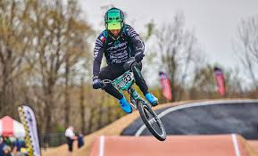
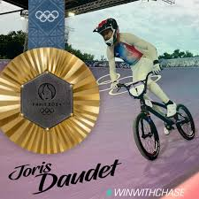

Biografia
Joris Daudet nacido el 12 de febrero de 1991 en Saintes francia

A participado en cuatro juegos olimpicos de verano entre los años 2012 y 2024 donde gano una medalla de oro en paris 2024 y un septimo lugar en tokio 2020

Ademas de que acumula doce medallas de el campeonato mundial de bmx entre los años 2010 y 2024 y dos medallas de oro en el campeonato europeo en los años 2011y 2017
Volver a la pagina principal